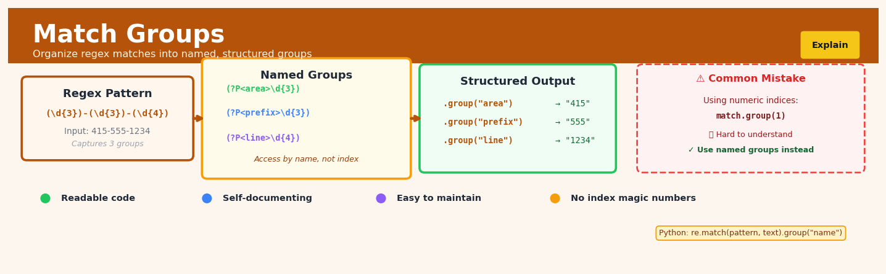

Match Groups#


The biggest mistake I see engineers make with match groups is treating them like an afterthought and relying on positional indices, which turns into a maintenance nightmare when patterns evolve. Named groups with descriptive labels like area_code instead of group 1 make your regex self-documenting and your code reviewers will actually understand what you're extracting. Trust me, six months from now when you're debugging a complex parsing pipeline, you'll thank yourself for spending the extra ten seconds to add those angle brackets and names.
The 60-Second Version#
What it does: Match groups finds untreated customers who look like your treated customers, so you can estimate what would have happened without the treatment.
When to use it: You’ve launched a program—a promotion, policy change, or intervention—to some customers but not others, and you need to know if it actually worked.
What you get back: An estimate of the true causal effect, isolating what your program accomplished from what would have happened anyway.
Difficulty |
Moderate |
Typical runtime |
Minutes on 100K rows |
What you bring |
Data with treatment indicators, outcomes, and characteristics for both treated and untreated units |
What you get |
Matched pairs or groups, treatment effect estimates, and balance diagnostics |
Heuristix bucket |
Explain — Causal Analysis & Interpretation |
Matching only controls for differences you can measure—if treated and untreated groups differ in ways you haven’t captured, your results will be biased.
Learning Objectives#
After reading this chapter, a business user will be able to:
Identify business scenarios where Match Groups is appropriate, such as evaluating marketing campaigns without randomized testing, assessing store interventions across locations, or measuring the impact of policy changes on customer segments.
Interpret match quality diagnostics and treatment effect estimates to explain to stakeholders whether the comparison groups are sufficiently similar and whether observed differences can be attributed to the intervention.
Decide whether to scale, modify, or abandon an intervention based on matched group analysis, accounting for the strength of evidence and potential confounding factors that weren’t matched.
After reading this chapter, a data scientist will be able to:
Implement Match Groups using distance metrics and matching algorithms (nearest neighbor, optimal, genetic), handling complications like unequal group sizes, multiple treatment conditions, and time-varying covariates.
Tune critical parameters including the number of matches per treated unit, caliper widths for acceptable match distance, and covariate weighting schemes while balancing bias-variance tradeoffs.
Validate matching quality using standardized mean differences and propensity score distributions, diagnose failures such as poor covariate overlap or remaining imbalance, and determine when matching is inappropriate for the dataset.
Overview#
Match groups is a causal inference technique that constructs sets of comparable units—typically treatment-control pairs or small clusters—based on measured covariates to estimate causal effects under observational (non-experimental) conditions. The core purpose is to approximate the counterfactual: what would have happened to treated units had they not received treatment, by finding untreated units with similar observable characteristics. Match groups belongs to the family of matching estimators within the broader discipline of quasi-experimental methods, sitting alongside propensity score matching, coarsened exact matching, and synthetic control methods.
When to Use This#
Use match groups when:
You need to estimate a treatment effect from observational data — When randomised controlled trials are infeasible, unethical, or too expensive, matching provides a principled way to construct comparison groups that mimic experimental conditions.
Selection into treatment depends on observable characteristics — Matching is appropriate when you can credibly argue that, conditional on measured covariates, treatment assignment is effectively random (the “selection on observables” or “conditional independence” assumption).
You want interpretable, transparent comparisons — Unlike regression adjustment, matching makes the comparison groups explicit, allowing stakeholders to inspect who is being compared to whom.
Your treatment and control groups have substantially different covariate distributions — When raw comparisons would be confounded by baseline differences, matching reweights or subsets the data to achieve covariate balance.
You have sufficient overlap in covariate space — Match groups require that for each treated unit, there exist comparable control units with similar covariate values.
You need to estimate heterogeneous treatment effects — By examining outcomes within match groups defined by specific covariate patterns, you can assess whether effects vary across subpopulations.
Do NOT use match groups when:
Selection into treatment depends on unobservables — If unmeasured confounders drive both treatment assignment and outcomes, matching on observables will not eliminate bias. Consider instrumental variables or regression discontinuity designs instead.
There is no overlap between treatment and control distributions — If treated units occupy regions of covariate space with no comparable controls, matching cannot construct valid counterfactuals. Extrapolation is required, and you should use methods designed for this regime.
You have a well-designed randomised experiment — With true randomisation, matching is unnecessary and may reduce statistical efficiency.
Your sample size is very small — Matching discards or downweights observations, which can severely reduce effective sample size and statistical power.
Questions This Answers#
Program Impact & ROI#
Did our new employee training program actually improve sales performance, or did we just happen to train our better performers?
Is the premium we’re paying for enterprise software worth it compared to the standard version, when we account for the fact that different types of clients use each?
If we had given those marketing dollars to our digital team instead of traditional media, would we have seen better results from similar customer segments?
Did opening stores in premium locations generate enough incremental revenue to justify the higher rent, or would we have done just as well with comparable traffic elsewhere?
Strategy & Resource Allocation#
Should we roll out this pilot program nationally, or did it only succeed because we tested it in our best-performing regions?
Which customer segments actually benefited from our loyalty program redesign versus those who would have spent more anyway?
Is our price increase driving customers away, or are the customers we’re losing just the ones who were leaving regardless?
Would switching suppliers have saved us money without sacrificing quality, looking at plants with similar production volumes?
Policy & Intervention Decisions#
Did the new commission structure motivate our mid-tier salespeople to close more deals, or just reward those already on an upward trajectory?
If we hadn’t invested in that warehouse automation, would similar facilities without it have caught up to our efficiency gains naturally?
Are our diversity hiring initiatives bringing in candidates who succeed long-term, compared to similar hires through traditional channels?
Did the operational changes we made after the merger actually reduce costs, or were we just comparing ourselves to underperforming legacy sites?
Should we implement flexible work policies company-wide based on our pilot results, or did it only work because volunteers opted in?
How It Works#
Imagine you’re trying to figure out whether a new training program actually improves employee performance. You can’t force people into the program randomly—some volunteered, others didn’t. The volunteers might already be more motivated or skilled. So you play matchmaker: for each person who took the training, you find someone who didn’t but looks remarkably similar on paper—same experience level, same prior performance reviews, same department. Now when you compare outcomes between these matched pairs, you’re seeing apples-to-apples comparisons instead of apples-to-oranges. The difference you observe is much more likely to be about the training itself, not about who chose to take it.
BEFORE MATCHING: Raw comparison is misleading
Treated Group Control Group
┌─────────────────┐ ┌─────────────────┐
│ Alice (trained) │ │ Bob (untrained) │
│ Experience: 8yr │ │ Experience: 2yr │
│ Score: 85 │ │ Score: 70 │
│ │ │ │
│ Carol (trained) │ │ Dan (untrained) │
│ Experience: 5yr │ │ Experience: 9yr │
│ Score: 78 │ │ Score: 82 │
└─────────────────┘ └─────────────────┘
↓ ↓
MATCHING ALGORITHM SEARCHES
(finds similar units based on
experience, prior scores, etc.)
↓ ↓
AFTER MATCHING: Comparable pairs
┌──────────────────────────────────────┐
│ Pair 1: Alice (8yr) → Emma (8yr) │
│ Score: 85 Score: 73 │
│ Effect = +12 │
├──────────────────────────────────────┤
│ Pair 2: Carol (5yr) → Frank (5yr) │
│ Score: 78 Score: 71 │
│ Effect = +7 │
└──────────────────────────────────────┘
Average effect across pairs = +9.5
Step 1: Define your treatment and control groups. Identify who received the intervention you’re studying (the treated group) and who didn’t (the control pool). At this stage, these groups probably differ in many ways beyond just the treatment—different backgrounds, characteristics, or circumstances.
Step 2: Select the characteristics that matter. Choose the observable features that likely influence both who got treated and what outcomes you’re measuring. These might be age, prior performance, location, or risk factors—whatever variables you believe confound the relationship you’re studying.
Step 3: Calculate similarity between units. For each treated unit, measure how similar it is to every potential control unit based on those chosen characteristics. This creates a distance score—units that are nearly identical get low distances, while very different units get high distances.
Step 4: Find the closest matches. For each treated individual, select one or more control individuals with the smallest distance scores. You’re essentially finding statistical twins—people who look the same on paper except one got treated and one didn’t.
Step 5: Build matched sets. Pair up or group together these similar units. Some control units might get matched to multiple treated units, or you might enforce strict one-to-one pairing depending on your data constraints.
Step 6: Compare outcomes within matched sets. Calculate the difference in outcomes between treated and control units within each matched pair or group. These differences reflect the treatment effect for comparable individuals.
Step 7: Aggregate across all matches. Average the treatment effects you observed across all matched sets to get your overall estimate of what the treatment actually caused.
The key insight: By constructing comparisons between units that differ only in treatment status but are otherwise observably identical, we eliminate confounding bias and isolate the causal effect we’re trying to measure.
The Intuition#
Imagine you are a hiring manager trying to determine whether a new training programme improves employee productivity. You cannot randomly assign employees to training—those who volunteer tend to be more motivated, experienced, or otherwise different from those who do not. Simply comparing the productivity of trained versus untrained employees would conflate the effect of training with the effect of pre-existing differences.
Match groups address this by finding, for each trained employee, an untrained employee who looks as similar as possible on relevant characteristics: same department, similar tenure, comparable prior performance ratings, similar educational background. By pairing trained employees with their “statistical twins,” you construct a comparison group that isolates the training effect from confounding factors. The untrained twin serves as an estimate of what the trained employee’s productivity would have been without training.
The key insight is that matching enforces covariate balance: after matching, the distribution of observed characteristics should be similar between treatment and control groups. This is precisely what randomisation achieves in experiments—it ensures that, on average, treatment and control groups are comparable on all characteristics, observed and unobserved. Matching attempts to replicate this for observed characteristics when randomisation is not possible.
A useful analogy is the concept of “twins studies” in epidemiology. Identical twins share genetic makeup, so comparing outcomes between twins where one was exposed to some environmental factor and one was not provides a cleaner estimate of that factor’s effect. Match groups extend this logic to observational data where true twins do not exist: we create synthetic twins by finding units with similar measured attributes.
The limitation, of course, is that matching only balances measured covariates. If there are important unmeasured differences between treated and untreated units—unobserved motivation, private information, latent health conditions—matching cannot eliminate this source of bias. This is why the credibility of any matching analysis rests fundamentally on the assumption that all relevant confounders have been measured and included.
The Mathematics#
Problem Setup and Notation#
Let \(i = 1, \ldots, N\) index units in the sample. Each unit has:
A binary treatment indicator \(T_i \in \{0, 1\}\), where \(T_i = 1\) denotes treatment
A vector of pre-treatment covariates \(\mathbf{X}_i \in \mathbb{R}^p\)
Potential outcomes \(Y_i(1)\) and \(Y_i(0)\), representing outcomes under treatment and control respectively
The observed outcome \(Y_i = T_i Y_i(1) + (1 - T_i) Y_i(0)\)
The fundamental problem of causal inference is that we observe only one potential outcome per unit. The causal effect for unit \(i\) is:
We typically target the Average Treatment Effect on the Treated (ATT):
or the Average Treatment Effect (ATE):
The Conditional Independence Assumption#
Matching estimators rely on the Conditional Independence Assumption (CIA), also known as unconfoundedness or selection on observables:
This states that, conditional on observed covariates \(\mathbf{X}\), treatment assignment is independent of potential outcomes. Under CIA, any systematic differences between treatment and control groups are captured by \(\mathbf{X}\).
Additionally, we require the overlap or common support condition:
This ensures that for any covariate value, there is positive probability of observing both treated and control units.
Distance Metrics and Matching Functions#
Given a treated unit \(i\) with covariates \(\mathbf{X}_i\), we seek control units \(j\) (where \(T_j = 0\)) that minimise some distance \(d(\mathbf{X}_i, \mathbf{X}_j)\).
Exact Matching requires \(\mathbf{X}_i = \mathbf{X}_j\) for discrete covariates. For continuous covariates, this is typically infeasible.
Mahalanobis Distance Matching uses:
where \(\mathbf{S}\) is the sample covariance matrix of \(\mathbf{X}\). This metric accounts for correlations and variances among covariates.
Propensity Score Matching reduces the dimensionality problem by matching on the propensity score \(e(\mathbf{X}) = P(T = 1 \mid \mathbf{X})\). Rosenbaum and Rubin (1983) showed that if CIA holds conditional on \(\mathbf{X}\), it also holds conditional on \(e(\mathbf{X})\):
The propensity score distance is:
Matching Algorithms#
Nearest Neighbour Matching assigns to each treated unit \(i\) the control unit \(j^*(i)\) that minimises distance:
\(k\)-Nearest Neighbour Matching uses the \(k\) closest controls, averaging their outcomes:
where \(\mathcal{M}_k(i)\) is the set of \(k\) nearest control neighbours to unit \(i\).
Caliper Matching imposes a maximum distance threshold \(\delta\):
Treated units with \(\mathcal{M}_\delta(i) = \emptyset\) are discarded, enforcing the common support condition.
The Matching Estimator#
The ATT matching estimator is:
where \(N_1 = \sum_i T_i\) is the number of treated units and \(\hat{Y}_i(0)\) is the imputed counterfactual outcome.
For \(k\)-nearest neighbour matching:
Bias and Variance Trade-offs#
Matching estimators exhibit a bias-variance trade-off controlled by the number of matches \(k\) and the caliper width \(\delta\).
Bias: When matches are imperfect (i.e., \(\mathbf{X}_i \neq \mathbf{X}_j\)), the estimator is biased. The bias is approximately:
where \(\mu_0(\mathbf{x}) = \mathbb{E}[Y(0) \mid \mathbf{X} = \mathbf{x}]\). Larger \(k\) and looser calipers increase bias.
Variance: Using more matches (\(k > 1\)) reduces variance by averaging over multiple controls, but may introduce bias if distant matches are included.
Abadie and Imbens (2006) provide a bias-corrected matching estimator:
where \(\hat{\mu}_0(\cdot)\) is an estimate of the conditional mean function, typically from linear regression within the matched sample.
Variance Estimation#
Abadie and Imbens (2006) showed that bootstrap standard errors are generally invalid for matching estimators. They derived analytical variance formulas. For 1:1 matching without replacement, the variance is:
where \(\sigma_t^2(\mathbf{x}) = \text{Var}(Y(t) \mid \mathbf{X} = \mathbf{x})\). These conditional variances must be estimated from the data.
Edge Cases and Degenerate Conditions#
Perfect separation: When treatment perfectly predicts some covariate value, overlap fails and matching is impossible in that region.
High-dimensional covariates: As \(p\) grows, the curse of dimensionality makes exact matching infeasible and nearest-neighbour matches increasingly poor. Dimension reduction (e.g., propensity scores) becomes essential.
Ties in distance: When multiple controls are equidistant, random tie-breaking or averaging is required.
Matching with replacement vs. without: Matching with replacement allows the same control to be matched to multiple treated units, reducing bias but requiring variance adjustment for repeated use.
Understanding the Mathematics#
The Average Treatment Effect on the Treated (ATT)#
The equation:
Read it aloud:
“The average treatment effect on the treated equals one divided by the number of treated units, multiplied by the sum—across all treated units—of each treated unit’s outcome minus its matched control unit’s outcome.”
What each symbol means:
\(\text{ATT}\) = Average Treatment Effect on the Treated (the causal effect we’re estimating)
\(N_T\) = Total number of treated units in our study
\(\sum_{i \in T}\) = Sum over all units \(i\) that belong to the treatment group \(T\)
\(Y_i^1\) = The observed outcome for treated unit \(i\)
\(Y_{j(i)}^0\) = The observed outcome for the control unit \(j\) matched to treated unit \(i\)
A concrete numerical example:
Suppose we’re evaluating whether a job training program increases annual earnings. We have 3 treated participants. Person A (treated) earns \(48,000 and is matched to Person D (control) earning \)42,000. Person B (treated) earns \(51,000, matched to Person E (control) earning \)45,000. Person C (treated) earns \(46,000, matched to Person F (control) earning \)43,000.
Step by step:
Difference for A: \(48,000 - \)42,000 = $6,000
Difference for B: \(51,000 - \)45,000 = $6,000
Difference for C: \(46,000 - \)43,000 = $3,000
Sum of differences: \(6,000 + \)6,000 + \(3,000 = \)15,000
ATT = \(15,000 ÷ 3 = **\)5,000**
Why this equation matters:
This equation converts individual comparisons into a single, interpretable causal estimate—without it, we’d have scattered pair-by-pair differences with no clear answer to “What is the overall effect of the treatment?”
The Mahalanobis Distance#
The equation:
Read it aloud:
“The Mahalanobis distance between unit \(i\) and unit \(j\) equals the square root of: the difference vector between their covariate values, transposed, then multiplied by the inverse covariance matrix, then multiplied by the difference vector again.”
What each symbol means:
\(d_M(i,j)\) = Mahalanobis distance measuring dissimilarity between units \(i\) and \(j\)
\(\mathbf{X}_i\) = Vector of all covariate values for unit \(i\) (age, income, education, etc.)
\(\mathbf{X}_j\) = Vector of all covariate values for unit \(j\)
\(\mathbf{S}^{-1}\) = Inverse of the covariance matrix (adjusts for correlation between covariates)
\(^T\) = Transpose operation (flips the row vector to a column)
\(\sqrt{\phantom{x}}\) = Square root (keeps the distance on interpretable scale)
A concrete numerical example:
Simplified to two covariates: Unit \(i\) has age=35 and income=\(60,000. Unit \)j\( has age=38 and income=\)58,000. Assume the inverse covariance matrix (after standardization) simplifies to an identity, so we compute Euclidean distance:
Difference vector: (35-38, 60000-58000) = (-3, 2000)
After standardization (dividing income by 1000 for scale): (-3, 2)
Squared differences: \((-3)^2 + (2)^2 = 9 + 4 = 13\)
Distance: \(\sqrt{13} \approx\) 3.6
Why this equation matters:
This distance metric accounts for correlations between variables—it prevents us from matching a 25-year-old recent graduate with a 55-year-old executive just because they both have “medium” income in absolute terms.
The Big Picture#
The mathematics of match groups is fundamentally solving an optimization problem: among all possible control units, which one provides the most credible counterfactual for each treated unit? The ATT equation converts these matched pairs into a single causal estimate, while the Mahalanobis distance provides a principled metric for “closeness” that simple Euclidean distance lacks—specifically, it adjusts for the fact that covariates may be correlated and measured on wildly different scales (age in years, income in thousands). We chose this mathematical framework because naïve comparison of treated and untreated units produces biased estimates whenever treatment assignment is non-random; matching forces us to compare apples to apples, and the math formalizes what “apples to apples” means when units have ten different characteristics simultaneously. At its core, the mathematics asks: if we rewind time and don’t give the treatment, what would this person’s outcome have been—and it answers by finding someone who looked just like them but didn’t get treated.
Python Implementation#
import numpy as np
import pandas as pd
from scipy.spatial.distance import cdist
from sklearn.linear_model import LogisticRegression
from sklearn.neighbors import NearestNeighbors
import statsmodels.api as sm
# Set random seed for reproducibility
np.random.seed(42)
# -----------------------------------------------------------------------------
# Generate synthetic observational data with confounding
# -----------------------------------------------------------------------------
n = 1000 # Total sample size
# Covariates: age, income (in thousands), and prior_engagement (binary)
age = np.random.normal(40, 10, n)
income = np.random.normal(50, 15, n)
prior_engagement = np.random.binomial(1, 0.3, n)
# Treatment assignment depends on covariates (confounding)
# Higher income and prior engagement increase probability of treatment
propensity_true = 1 / (1 + np.exp(-(- 2 + 0.02 * age + 0.04 * income + 1.0 * prior_engagement)))
treatment = np.random.binomial(1, propensity_true)
# Potential outcomes
# Y(0): baseline outcome depends on covariates
# Y(1): treatment adds effect of 5 units on average
y0 = 20 + 0.5 * age + 0.3 * income + 5 * prior_engagement + np.random.normal(0, 5, n)
y1 = y0 + 5 + 0.1 * age # Heterogeneous treatment effect
# Observed outcome
y_observed = treatment * y1 + (1 - treatment) * y0
# Create DataFrame
df = pd.DataFrame({
'age': age,
'income': income,
'prior_engagement': prior_engagement,
'treatment': treatment,
'outcome': y_observed
})
print("Data Summary:")
print(df.groupby('treatment')[['age', 'income', 'prior_engagement', 'outcome']].mean())
print(f"\nTrue ATT (known from simulation): {(y1[treatment == 1] - y0[treatment == 1]).mean():.3f}")
# -----------------------------------------------------------------------------
# Example 1: Propensity Score Matching with Nearest Neighbours
# -----------------------------------------------------------------------------
print("\n" + "="*60)
print("Example 1: Propensity Score Matching")
print("="*60)
# Step 1: Estimate propensity scores using logistic regression
X_covariates = df[['age', 'income', 'prior_engagement']]
ps_model = LogisticRegression(max_iter=1000)
ps_model.fit(X_covariates, df['treatment'])
df['propensity_score'] = ps_model.predict_proba(X_covariates)[:, 1]
# Step 2: Perform nearest-neighbour matching on propensity score
treated_idx = df[df['treatment'] == 1].index.values
control_idx = df[df['treatment'] == 0].index.values
treated_ps = df.loc[treated_idx, 'propensity_score'].values.reshape(-1, 1)
control_ps = df.loc[control_idx, 'propensity_score'].values.reshape(-1, 1)
# Find nearest control for each treated unit (1:1 matching with replacement)
nn = NearestNeighbors(n_neighbors=1,
## Visualisations


## Using This in Heuristix
### What You'll Need
The Match Groups node expects a single dataset with both treated and untreated units. Your data should include:
- **Treatment indicator column**: A binary column (0/1, TRUE/FALSE, or similar) marking which units received treatment
- **Covariate columns**: Numeric or categorical features you'll use to find matches (demographics, pre-treatment measurements, etc.)
- **Outcome column**: The metric you want to compare between treated and control groups
**Example input data:**
| customer_id | received_coupon | age | past_purchases | region | revenue |
|-------------|----------------|-----|----------------|--------|---------|
| 1001 | 1 | 34 | 12 | West | 450 |
| 1002 | 0 | 35 | 11 | West | 380 |
| 1003 | 1 | 28 | 3 | East | 220 |
All units should be in the same table—don't split treated and control into separate datasets.
### Configuration Parameters
| Parameter | What It Controls | Sensible Default | When to Change It |
|-----------|-----------------|------------------|-------------------|
| **Treatment Column** | Which column identifies treated units | (none—required) | This is always required; select your binary treatment indicator |
| **Matching Covariates** | Which features to use when finding similar units | (none—required) | Include variables that affect both treatment assignment and outcomes; exclude post-treatment variables |
| **Matching Method** | Algorithm for finding matches: nearest neighbor, optimal, or exact | Nearest neighbor | Use "exact" for small categorical datasets; "optimal" minimizes total distance but runs slower |
| **Match Ratio** | How many control units per treated unit | 1:1 | Increase (e.g., 1:3) when you have abundant controls and want tighter confidence intervals |
| **Caliper** | Maximum allowable distance for a match | 0.25 standard deviations | Tighten (0.1) to enforce stricter similarity; widen if you're discarding too many units |
| **Distance Metric** | How to measure similarity (Mahalanobis, Euclidean, propensity score) | Mahalanobis | Use propensity score for high-dimensional data; Euclidean for scaled numeric features only |
### What You'll Get Back
The node outputs an **enriched dataset** with these new columns:
- **match_group_id**: Unique identifier linking each treated unit with its matched control(s)
- **match_weight**: Weight for each unit (controls may be weighted if used in multiple matches)
- **match_distance**: Similarity score between matched pairs—lower is better
You'll also see a **Balance Diagnostics Panel** showing:
- **Covariate balance table**: Standardized mean differences before and after matching (aim for <0.1)
- **Love plot**: Visual comparison of covariate balance—dots should cluster near zero after matching
- **Sample size summary**: How many treated and control units were successfully matched
Finally, the **Treatment Effect Summary** displays your estimated average treatment effect (ATT) with confidence intervals.
### Downstream Connections
Connect Match Groups to:
- **Statistical Test** node to formally test significance of the treatment effect
- **Data Table** node to inspect individual match groups and verify quality
- **Visualization** nodes to create custom charts comparing treated vs. control outcomes
- **Filter** node to remove unmatched units before further analysis
### Quick Start
1. **Connect your data** and select the treatment indicator column
2. **Choose matching covariates**—include pre-treatment characteristics that predict both treatment and outcome
3. **Start with defaults** (1:1 nearest neighbor, 0.25 caliper) and click Run
4. **Check the Love plot**—if any covariates show standardized differences >0.1, consider adding more covariates or tightening the caliper
5. **Review the ATT estimate** in the treatment effect summary—this is your causal estimate
### Practical Tips
**Tip 1**: Always examine unmatched units. If you're losing >30% of your treated group, your caliper may be too strict or you need better covariates.
**Tip 2**: Categorical variables work best with exact matching. If you have important categories (like region), consider exact matching on those first, then nearest-neighbor on numeric features.
**Tip 3**: Check balance on covariates you *didn't* match on. If these also balance, it suggests your matching captured important similarities.
**Tip 4**: When matching with replacement (allowing controls to match multiple treated units), pay attention to match weights in subsequent analyses—some controls matter more than others.
**Tip 5**: Save your match_group_id column. You'll need it if you want to perform subgroup analyses or sensitivity checks later.
## Config Recipes
### Recipe 1: Rapid Exploration Match
**When to use:** Initial data exploration when you need quick feedback on whether matching is viable for your dataset, or when presenting preliminary findings to stakeholders.
**Settings:**
| Parameter | Value | Why |
|-----------|-------|-----|
| `distance_metric` | `"mahalanobis"` | Fast computation, accounts for covariate correlation |
| `caliper` | `0.5` | Loose enough to find matches quickly |
| `max_matches` | `1` | One-to-one matching minimizes computation |
| `replacement` | `False` | Simpler interpretation for first pass |
| `exact_match_vars` | `None` | Skip exact matching constraints initially |
**What you get:** Results in seconds to minutes that reveal match feasibility, covariate balance issues, and rough effect size estimates.
**Trade-off:** You sacrifice precision and may include poor-quality matches that would fail stricter calipers or balance checks.
### Recipe 2: Production-Grade Matching
**When to use:** Final analysis for publication, regulatory submission, or high-stakes business decisions where methodological rigor will be scrutinized.
**Settings:**
| Parameter | Value | Why |
|-----------|-------|-----|
| `distance_metric` | `"propensity"` | Well-understood, defensible choice |
| `caliper` | `0.01` | Strict threshold ensures high match quality |
| `max_matches` | `3` | Balance between variance reduction and bias |
| `replacement` | `True` | Uses control pool efficiently |
| `exact_match_vars` | Key confounders | Forces balance on critical variables |
| `balance_check` | `"standardized_diff"` | Standard diagnostic with `threshold=0.1` |
| `common_support` | `"trim"` | Remove extreme propensity scores |
**What you get:** Defensible matches with documented covariate balance and sensitivity analyses built in.
**Trade-off:** Longer runtime (hours for large datasets) and potentially fewer matched units due to strict quality controls.
### Recipe 3: Time-Varying Treatment Launch
**When to use:** Evaluating product launches, policy rollouts, or interventions that occur at different calendar times across units, where temporal trends could confound effects.
**Settings:**
| Parameter | Value | Why |
|-----------|-------|-----|
| `distance_metric` | `"euclidean"` | Includes time distance in matching space |
| `caliper` | `0.25` | Moderate threshold |
| `max_matches` | `5` | Need buffer for time-window constraints |
| `replacement` | `True` | Limited control pool per time window |
| `exact_match_vars` | `["month", "year"]` | Force temporal alignment |
| `time_window` | `30` | Match within ±30 days of treatment |
**What you get:** Matches that control for both unit characteristics and secular trends, preventing time-based confounding.
**Trade-off:** Substantially reduced control pool since each treated unit can only match to contemporaneous controls.
### Recipe 4: Rare Treatment Detection
**When to use:** Evaluating adverse events, fraud detection, or any outcome where treatment/exposure is rare (<5% prevalence) and you have abundant control observations.
**Settings:**
| Parameter | Value | Why |
|-----------|-------|-----|
| `distance_metric` | `"propensity"` | Handles extreme imbalance well |
| `caliper` | `0.02` | Tight caliper justified by large control pool |
| `max_matches` | `10` | Leverage abundant controls for precision |
| `replacement` | `True` | Essential with small treatment group |
| `exact_match_vars` | High-risk strata | Match within risk categories |
| `ratio_match` | `"variable"` | Use more matches where propensity overlap is good |
**What you get:** Stable estimates despite rare treatment by maximizing information from the large control reservoir.
**Trade-off:** Asymmetric analysis where some treated units get many matches and others few, complicating variance estimation.
## Business Applications
**Financial Services**
A mid-sized UK mortgage lender needed to prove that its new AI-powered credit decisioning system wasn't introducing bias or unfairly rejecting creditworthy applicants compared to the legacy manual process. Match groups paired applicants processed under each system with identical credit scores, loan-to-value ratios, employment history, and demographics, isolating the pure effect of the algorithmic change. The analysis revealed the AI system actually approved 8.3% more borderline cases while maintaining identical default rates, generating £2.4M in additional annual interest revenue and providing regulatory documentation that satisfied FCA auditors.
**Retail**
An e-commerce fashion retailer with 500+ stores wanted to measure whether its new "try before you buy" program truly increased sales or merely attracted cherry-pickers who ordered multiple items with high return rates. By matching participating customers to non-participants with identical browsing behavior, past purchase frequency, average order value, and return history, the company isolated the program's causal impact. Results showed a 23% lift in annual customer lifetime value and 14% reduction in return rates among matched pairs, justifying expansion from the pilot's 50 stores to the full network.
**Healthcare**
A regional hospital network serving 1.2M patients implemented remote monitoring devices for high-risk diabetes patients but faced pushback from CFOs questioning the $180-per-patient device cost. Match groups compared device recipients to similar patients (matched on HbA1c levels, comorbidities, prior hospitalization frequency, and socioeconomic factors) who received standard care. The matched analysis showed device users had 41% fewer emergency department visits and 2.1 fewer hospital days annually, translating to $3,400 per-patient savings that dwarfed device costs and secured budget for network-wide rollout.
**Insurance**
A commercial property insurer testing a premium discount for IoT sensor installation couldn't run a traditional A/B test because clients self-selected into the program. Match groups paired sensor-equipped buildings with similar non-equipped properties based on industry, square footage, location, claim history, and fire suppression systems. The analysis revealed sensor-equipped buildings filed 34% fewer water damage claims and 28% fewer total claims, validating the discount program and enabling actuaries to price it confidently at scale across 12,000 commercial clients.
**Manufacturing**
An automotive parts manufacturer with 14 production lines introduced collaborative robots on three lines but needed evidence before a $4.5M facility-wide investment. Traditional before-after analysis was confounded by seasonal demand shifts and product mix changes. Match groups compared robot-assisted lines to similar conventional lines producing comparable parts with matching complexity, volume, and workforce experience. Matched pairs showed defect rates dropped from 3.2% to 1.1%, throughput increased 17%, and worker injury rates fell 44%, providing the business case that secured board approval.
**Logistics**
A national parcel delivery company piloted electric vehicle fleets in eight urban territories but couldn't isolate their impact from territory-specific factors like traffic congestion and package density. Match groups paired each EV territory with conventional diesel territories of similar size, delivery density, distance profiles, and weather patterns. The matched analysis demonstrated EVs reduced per-package delivery costs by $0.18 (from $2.45 to $2.27) despite higher vehicle costs, while cutting emissions 67%—figures that justified a 2,000-vehicle procurement.
**Marketing**
A B2B SaaS company wanted to measure whether attending its annual user conference causally increased renewal rates or merely reflected that already-engaged customers were more likely to attend. Match groups paired conference attendees with non-attendees having identical usage patterns, support ticket history, company size, and tenure. The matched analysis isolated a pure 12.8 percentage point lift in renewal rates (from 84% to 96.8%), plus 31% higher upsell rates, demonstrating conference ROI of $4.20 per dollar spent and tripling the event budget.
**Telecommunications**
A mobile network operator testing proactive customer retention outreach faced a classic chicken-or-egg problem: did outreach prevent churn, or did they accidentally target customers already unlikely to leave? Match groups paired contacted at-risk subscribers with similar non-contacted subscribers based on usage decline patterns, tenure, plan type, payment history, and customer service interactions. The analysis showed outreach reduced 90-day churn from 34% to 19% among matched pairs, cutting processing time from four weeks of manual analysis to 20 minutes of automated matching and saving an estimated $8.7M annually in retention costs.
**Energy**
A utility company offering smart thermostat rebates needed causal evidence the devices actually reduced peak demand rather than being adopted by already-efficient households. Match groups paired rebate recipients with non-recipients in similar home sizes, historical usage patterns, climate zones, and household demographics. Matched households with smart thermostats reduced peak-hour consumption by 1.8 kWh daily, enabling the utility to defer a $45M substation upgrade by verifiably shifting 22 MW of peak demand.
**Public Sector**
A city transportation department implemented bus rapid transit on one corridor but faced skepticism about expanding the program. Match groups compared corridor businesses to similar establishments on conventional bus routes, matching on business type, foot traffic, proximity to transit, and pre-implementation revenue trends. The matched analysis showed businesses near BRT stations experienced 26% faster revenue growth over three years, providing evidence that secured $340M in voter-approved transit expansion bonds.
**SaaS/Technology**
A project management software company introduced an AI assistant feature but couldn't randomize access due to tiered pricing constraints. Match groups paired teams with assistant access to similar teams without it, matching on team size, project complexity, feature usage patterns, and collaboration metrics. The analysis revealed assistant-enabled teams completed projects 11 days faster on average and reported 3.2-point higher satisfaction scores (on a 10-point scale), enabling the product team to move the feature from premium to standard tier and drive adoption across 180,000 teams.
## Worked Example
Sarah Chen, a senior data scientist at Meridian Insurance, was reviewing her notes from the quarterly product meeting when the VP of Marketing leaned across the table. "We rolled out personalized email recommendations to about 40% of our auto insurance customers last quarter," he said. "Claims are saying those customers are filing fewer accidents. But I need to know—is that real, or did we just happen to target safer drivers?" The question mattered: if the intervention worked, Marketing wanted to expand it nationwide. If it was selection bias, they'd be throwing money at a placebo.
Sarah knew this was a textbook case for match groups. The email campaign hadn't been randomized—it was deployed based on email engagement history, which likely correlated with all sorts of customer characteristics. She needed to find untreated customers who looked like treated ones in every way except receiving the emails.
She pulled together a dataset of 8,472 customers, blending policy records, demographic data, and claims history. Here's what a sample looked like:
| customer_id | received_email | age | years_customer | prior_claims | claim_last_6mo |
|-------------|----------------|-----|----------------|--------------|----------------|
| A10234 | 1 | 34 | 2.3 | 0 | 0 |
| A10291 | 0 | 33 | 2.1 | 1 | 0 |
| A10457 | 1 | 52 | 7.8 | 2 | 1 |
| A10523 | 0 | 29 | 1.2 | 0 | 0 |
| A10691 | 1 | 51 | 8.1 | 1 | 0 |
The data had the usual quirks: a handful of customers with missing age values (she imputed medians), some records where `prior_claims` seemed suspiciously high (she capped outliers at the 99th percentile), and a few duplicate customer IDs from a botched CRM merge she had to clean.
Sarah opened her analysis notebook and configured the match groups node. She chose **nearest neighbor matching with a caliper**, matching each treated customer to the single most similar untreated one, but only if the distance was within 0.15 standard deviations. "I want tight matches," she thought, "even if it means dropping some treated units." She selected `age`, `years_customer`, and `prior_claims` as matching covariates—these were the factors most likely to confound the relationship. She set `claim_last_6mo` as the outcome variable.
Here's the core of her analysis script:
```python
import pandas as pd
from sklearn.neighbors import NearestNeighbors
from sklearn.preprocessing import StandardScaler
# Load data
df = pd.read_csv('customer_campaign_data.csv')
# Separate treated and control
treated = df[df['received_email'] == 1].copy()
control = df[df['received_email'] == 0].copy()
# Matching covariates
X_cols = ['age', 'years_customer', 'prior_claims']
# Standardize for distance calculation
scaler = StandardScaler()
X_treated = scaler.fit_transform(treated[X_cols])
X_control = scaler.transform(control[X_cols])
# Fit nearest neighbors with caliper
nbrs = NearestNeighbors(n_neighbors=1, metric='euclidean')
nbrs.fit(X_control)
distances, indices = nbrs.kneighbors(X_treated)
# Apply caliper: drop matches with distance > 0.15
caliper = 0.15
valid_matches = distances.flatten() < caliper
matched_treated = treated[valid_matches].copy()
matched_control = control.iloc[indices[valid_matches].flatten()].copy()
# Estimate treatment effect
ate = matched_treated['claim_last_6mo'].mean() - matched_control['claim_last_6mo'].mean()
print(f"Average Treatment Effect: {ate:.4f}")
print(f"Matched pairs: {len(matched_treated)}")
The results came back clean:
Metric |
Value |
|---|---|
Matched pairs |
2,847 |
Treated units dropped (caliper) |
461 |
Avg claims (treated) |
0.082 |
Avg claims (control) |
0.118 |
Average Treatment Effect |
-0.036 |
Sarah walked through the numbers carefully. Out of 3,308 treated customers, she successfully matched 2,847 to similar untreated ones. The personalized emails were associated with a 3.6 percentage point reduction in claims filed over six months. For a baseline claim rate around 12%, that was a 30% relative reduction. And because the matched groups were balanced on age, tenure, and prior claims, this wasn’t just cherry-picking good drivers.
The insight hit her during the commute home: the emails weren’t magical. They reminded customers about safe driving tips, policy discounts for telematics, and seasonal hazards. It was behavioral nudging at scale—and it worked.
Two weeks later, Sarah presented to the executive steering committee. The CFO did the math on the spot: a 30% reduction in claims translated to roughly \(4.2 million in annual savings if scaled nationally, against a campaign cost of about \)180,000. The decision was unanimous: expand the program to all eligible customers by Q3.
If Sarah could do it over, she’d collect one more variable: whether customers had the mobile app installed. She suspected app users were more engaged overall, and that might be a hidden confounder. She also wished she’d done a sensitivity analysis—testing how robust the result was to unmeasured confounding. But for a fast-moving business decision, match groups gave her exactly what she needed: a credible counterfactual, grounded in observable similarity.
Interpreting Your Results#
You’ve just run your first match groups analysis. You’re staring at balance statistics, effect estimates, and sample sizes that look like alphabet soup. Let’s walk through exactly what you’re looking at and what it means for your analysis.
The Treatment Effect Estimate#
Plain-English meaning: This is your bottom line—the difference in outcomes between your matched treated and control units. If you’re estimating the effect of a marketing campaign on revenue, and your effect estimate is \(250, that means treated customers spent \)250 more on average than their matched controls.
Concrete benchmarks: The magnitude matters less than context. A \(250 effect is massive if your average transaction is \)50, trivial if it’s $10,000. Instead, look at your effect size as a percentage of baseline: 5-10% is modest but meaningful, 10-25% is substantial, above 25% demands skepticism (you may have unmeasured confounding).
Red flags: If your confidence interval includes zero, you haven’t detected a statistically significant effect. If your effect is larger than 50% of baseline, either you’ve found gold or something’s wrong with your matching—check balance statistics immediately. If the sign is opposite to what you expected, don’t rationalize it away; investigate your treatment assignment.
Balance Statistics (Standardized Mean Differences)#
Plain-English meaning: These numbers show how similar your treatment and control groups are on each covariate after matching. A standardized mean difference (SMD) of 0.1 means the groups differ by 0.1 standard deviations on that variable—roughly equivalent to comparing two groups where one averages 100 and the other 101 on an IQ-style scale.
Concrete benchmarks: SMD below 0.1 is excellent balance. 0.1-0.25 is acceptable for most applications. Above 0.25 means that covariate is still meaningfully imbalanced and could bias your results. Above 0.5 is a serious problem—your matching failed for that variable.
Red flags: If your most important confounders (the variables you think drive both treatment assignment and outcomes) have SMDs above 0.25, stop. Your effect estimate is likely biased. If all your SMDs are below 0.05, you might be overfitting—did you match so tightly that you discarded most of your sample?
Sample Size and Match Rate#
Plain-English meaning: The match rate tells you what percentage of treated units found acceptable matches. If you started with 1,000 treated units and matched 800, your match rate is 80%. The remaining 200 were too different from any control unit to match reliably.
Concrete benchmarks: Match rates above 80% are excellent. 60-80% is typical and workable. Below 60% means you’re discarding substantial information—your results will be less generalizable. Below 40% is concerning; you may be estimating effects only for a very specific subpopulation.
Red flags: Low match rates combined with large effect estimates often mean you’re only matching on the “easy” cases. If your matched sample looks demographically different from your full treated sample (check descriptive statistics), you have a generalizability problem—your effect estimate applies only to the matched subset.
Reading Outputs Together#
Strong results show three things simultaneously: (1) balance statistics mostly below 0.1, (2) match rate above 70%, and (3) confidence intervals that exclude zero but aren’t absurdly wide. If you have perfect balance but matched only 30% of units, you’ve traded external validity for internal validity. If you matched 95% but have SMDs above 0.3 on key variables, you’ve done the opposite.
Sanity Check Checklist#
Balance on the most important confounder: Check the variable you most suspect drives both treatment and outcome—is its SMD below 0.25?
Sample size preservation: Did you keep at least 50% of your treated units? Below that, question what population you’re actually studying.
Effect magnitude reasonableness: Is your effect smaller than the standard deviation of your outcome? If not, investigate.
Overlap visualization: Look at propensity score distributions—do treated and control units actually occupy the same range?
Placebo outcomes: If available, check that matching produces null effects on pre-treatment outcomes.
Good Enough to Act On?#
Your results are actionable when you hit these thresholds simultaneously: SMDs below 0.25 on all critical confounders, match rate above 60%, and a statistically significant effect estimate that’s plausible in magnitude (typically under 50% of baseline). At that point, you have credible evidence of a causal effect. Below these thresholds, report the estimate but acknowledge limitations, and consider alternative specifications or additional robustness checks before making high-stakes decisions.
Decision Guidance#
What This Result Is Telling You#
When match groups analysis tells you that a treatment (a program, policy, or intervention) increased an outcome by X%, you’re learning what would have happened differently if you had rolled that treatment out to similar units who didn’t receive it. This is fundamentally about resource allocation: should you expand this program, cut it, or redesign it? The matched units serve as a measurement device, showing you the counterfactual world where you didn’t act. If your marketing campaign appears to lift sales by 15% among matched customer pairs, you’re seeing 15% that wouldn’t have existed without your investment.
The quality of this answer depends entirely on whether your matched groups are truly comparable. If you matched stores based on revenue and location, but didn’t account for manager experience, and manager quality drives most performance, your 15% effect might actually be 2%—or even negative. The statistical output will give you balance diagnostics, match quality metrics, and effect estimates with confidence intervals. Your job as a decision-maker is to ask: “Did we match on the things that actually matter?” and “Is the effect size large enough to justify the cost?”
This analysis doesn’t tell you why something worked, only that it worked and by how much. If you find that leadership training increased team productivity by 8%, you still don’t know which components of the training mattered. That’s a different question requiring different methods. Match groups gives you the business case for scaling or stopping; it doesn’t hand you the improvement playbook.
Decision Points#
If you see this… |
It means… |
Recommended action |
Who acts on this |
|---|---|---|---|
Treatment effect confidence interval excludes zero (e.g., [+4%, +12%]) AND standardized mean differences <0.1 on key covariates |
The effect is real and matches are high quality |
Proceed with scaling the intervention; prepare budget request |
VP/Director level with CFO approval |
Treatment effect point estimate positive but confidence interval includes zero (e.g., [-2%, +9%]) |
Results are inconclusive; effect may be too small or sample size insufficient |
Run pilot expansion with measurement plan, or collect more data before full rollout |
Program manager with analytics support |
Standardized mean differences >0.25 on any critical covariate after matching |
Your treatment and control groups aren’t comparable; results are likely biased |
Stop. Revisit matching strategy or find additional covariates before making decisions |
Data science team with domain expert review |
Treatment effect is significant but effect size <5% of outcome mean AND implementation costs are high |
Statistically real but economically irrelevant |
Discontinue or dramatically redesign the intervention |
Senior leadership with finance |
<60% of treated units successfully matched to controls |
You’re discarding too much data; generalizability is questionable |
Investigate why matching failed; results may only apply to subset of population |
Analytics team with business stakeholder |
When to Proceed vs. Investigate Further#
Proceed with confidence:
Standardized mean differences <0.1 on all covariates used for matching
80% of treated units successfully matched
Confidence interval for treatment effect excludes zero
Effect size exceeds 2× the implementation cost per unit
Proceed with caution:
Standardized mean differences between 0.1–0.2 on secondary covariates
Match rate 60–80%
Point estimate positive but confidence interval barely excludes zero
Qualitative domain knowledge supports the finding even if borderline significant
Investigate before acting:
Any standardized mean difference >0.25
Match rate <60%
Confidence interval includes zero
Effect direction contradicts theory or prior evidence
Large differences in outcome variance between treatment and control groups post-matching
Do not use these results yet:
Common support assumption violated (no overlap in covariate distributions)
Key confounders identified but not measured or unavailable for matching
Matched sample represents <30% of target population
Balance diagnostics not yet run or reviewed
The Cost of Getting This Wrong#
A manufacturing company used match groups to evaluate a workplace safety program, finding a 20% reduction in incidents. They matched facilities by size and region but ignored production line complexity and workforce tenure. Based on the analysis, they spent $8M rolling out the program to 40 facilities. Eighteen months later, incident rates hadn’t budged at most locations. Post-mortem revealed the original “effect” was entirely explained by the treated facilities having more experienced workers—a variable absent from the matching process. The company wasted nearly the entire investment and, worse, delayed implementing interventions that might have actually worked. Meanwhile, executive credibility in data-driven decisions eroded, making future analytics initiatives harder to fund. The opportunity cost was even steeper: those resources could have funded equipment upgrades with proven safety records. Poor matching doesn’t just waste the program budget—it wastes the time until you realize the mistake, during which the real problem continues unchecked.
Common Pitfalls#
The Perfect Match Illusion
Here’s what happened: A marketing analyst at a retail company was evaluating a loyalty program rollout. They matched treatment and control customers on age, gender, and prior purchase frequency, achieving exact matches for 85% of treated customers. The output showed beautiful balance tables with standardized mean differences all below 0.05. They concluded the program increased spending by 22% and recommended company-wide expansion.
Why it happens: Analysts fall in love with balance statistics without questioning what’s missing. The cognitive trap is assuming that the covariates you have are the covariates that matter. In this case, they ignored customer lifetime value and shopping category preferences—the actual drivers of loyalty program self-selection.
How to detect it: Look beyond the balance table. Check whether matched units have similar pre-treatment outcome trajectories. Plot the outcome variable for 3-6 periods before treatment. If treated and control groups weren’t on parallel paths historically, your matches are balanced on the wrong things.
The fix: Start with domain expertise to identify confounders, not just available data fields. Run placebo tests using pre-treatment periods as fake “treatment” times—if you detect effects when none should exist, your matches are suspect.
The Vanishing Sample Problem
Here’s what happened: A junior data scientist at a healthcare startup was matching patients who received a new care management intervention. They used 1:1 nearest neighbor matching with a tight caliper (0.01 propensity score units) to ensure “high quality” matches. The output showed strong covariate balance, but only 23% of treated patients found matches. They concluded the intervention reduced hospital readmissions by 31%, presenting results that looked statistically rigorous.
Why it happens: Fresh from coursework emphasizing match quality over quantity, analysts impose strict matching criteria without considering external validity. They optimize for internal validity—ensuring matched pairs are truly comparable—while unknowingly destroying generalizability.
How to detect it: Calculate your effective sample size and matching rate before celebrating balance statistics. If you’re dropping more than 40% of treated units, ask explicitly: “Who am I excluding, and does my result only apply to this subset?” Check whether matched treated units differ systematically from unmatched ones on observable characteristics.
The fix: Relax calipers incrementally and document the bias-variance tradeoff. Consider methods like optimal matching or full matching that retain more sample while maintaining acceptable balance.
The Time Bomb
Here’s what happened: An experienced product analyst was assessing a feature change rolled out gradually across user cohorts. They matched users who adopted the feature in Week 3 with non-adopters based on demographic and usage data from Week 1. The output showed adopters had 40% higher engagement. They concluded the feature drove substantial value and should be prioritized in the roadmap.
Why it happens: Time-varying confounding is invisible in static matching frameworks. Seasoned practitioners, moving fast under deadline pressure, pull baseline covariates from whatever period is convenient without considering that user behavior between baseline and treatment affects both treatment assignment and outcomes.
How to detect it: Check whether your matching window excludes the period immediately before treatment. If you’re matching on “Week 1” characteristics but treatment happens in “Week 3,” examine Week 2 data. Users who changed behavior in Week 2 likely self-selected into treatment based on factors you didn’t capture.
The fix: Match on covariates measured as close to treatment as possible—ideally the period immediately before. For rolling interventions, use time-varying matching or difference-in-differences with matching.
The Common Support Blindspot
Here’s what happened: A business intelligence lead was evaluating a premium service tier. They matched premium subscribers to free users on engagement metrics and demographics. The model ran without errors, producing matches for all premium users. The dashboard showed a 15% lift in retention. They published the finding in a quarterly business review.
Why it happens: Matching algorithms will force matches even when no comparable units exist. Experienced practitioners who’ve automated their workflows skip visual diagnostics, trusting that “no error messages” means “valid results.”
How to detect it: Plot propensity score distributions for treatment and control groups before matching. If the distributions barely overlap—say, 90% of treated units have propensity scores above 0.7 while 90% of controls are below 0.3—you’re extrapolating, not matching.
The fix: Trim units outside the region of common support before attempting matches. Report results conditional on this restriction: “Among users with propensity scores between 0.2 and 0.8…”
The Post-Treatment Contamination
Here’s what happened: A policy researcher was studying job training program effectiveness. They matched participants to non-participants using employment history, education, and demographics. To “improve balance,” they included a variable measuring social support networks collected six months into the program. The output showed perfect balance and a 28% earnings increase. They submitted the findings to a major journal.
Why it happens: The desire for better balance overrides causal reasoning. Analysts treat matching as a pure prediction problem—throw in anything that improves covariate balance—forgetting that some variables are consequences of treatment, not confounders.
How to detect it: Audit your matching variables by collection date and causal pathway. Ask: “Could treatment have influenced this variable?” If a covariate was measured post-treatment or could plausibly be affected by treatment anticipation, it’s contaminated.
The fix: Restrict matching to pre-treatment covariates only. When temporal boundaries are fuzzy, conduct sensitivity analyses excluding suspicious variables.
The Replacement Roulette
Here’s what happened: An operations analyst matched stores receiving a new inventory system to control stores, using matching with replacement to maximize match quality. Store #47 (a high-performing urban location) was used as a control for 12 different treated stores. The analysis showed modest positive effects with tight confidence intervals. They recommended scaling the system nationwide.
Why it happens: Analysts focus on individual match quality without considering that reusing controls creates statistical dependencies. The math still works in theory, but effective sample size plummets in practice.
How to detect it: Check the distribution of how many times each control unit is reused. Calculate max(times_used) and mean(times_used). If any control appears more than 3-5 times, you’re heavily dependent on a few units’ outcomes.
The fix: Use matching without replacement when possible, or weight your analysis to account for reuse frequency. At minimum, conduct sensitivity analysis excluding the most frequently reused controls.
The Subgroup Mirage
Here’s what happened: A growth team matched users for an onboarding experiment, finding an overall 8% improvement in activation rates. During the presentation, a stakeholder asked about effects by user segment. The analyst quickly filtered the matched dataset by user type and reported: “For power users, the effect is 45%; for casual users, -12%.” Leadership decided to target only power users.
Why it happens: Matching achieves balance on the full sample, but subsetting destroys that balance within groups. Under pressure to answer follow-up questions, analysts slice matched data like any other dataset, forgetting that subgroup balance wasn’t guaranteed by the original matching procedure.
How to detect it: Before reporting subgroup effects, check balance statistics separately within each subgroup. Look at standardized mean differences for covariates within each subset. If power users in treatment have propensity scores averaging 0.72 while controls average 0.54, the subgroup comparison is confounded.
The fix: Either match separately within subgroups from the start, or clearly caveat that subgroup findings are exploratory and require validation with proper subgroup-specific matching.
Common Misconceptions#
“If my matched groups look balanced on the covariates I matched on, the causal estimate is valid”
Why people believe this: Balance checks are taught as the primary diagnostic for matching quality, and achieving balance feels like proof that you’ve eliminated confounding. Statistical software outputs beautiful balance tables showing standardized mean differences below 0.1, and reviewers specifically ask for them. It seems logical: if treated and control groups are similar on observables, the comparison is fair.
The truth: Balance on observed covariates is necessary but nowhere near sufficient for causal validity. The fundamental assumption—unconfoundedness—requires that all confounders are observed and matched on. Balance diagnostics tell you nothing about unobserved confounders. You could have perfect balance on age, income, and education while completely missing that treated units are systematically more motivated, risk-tolerant, or connected—factors that both influence treatment selection and outcomes. Balance is a check that your matching algorithm worked as intended mechanically, not a test of whether your causal identification strategy is sound.
The real-world consequence: A retail chain matches stores receiving a new inventory system to similar stores on size, location demographics, and baseline sales, achieving excellent covariate balance. They estimate a 12% sales increase and roll out the system company-wide at $2M cost. The effect disappears. What they missed: stores were selected for the pilot partly because their managers volunteered—capturing motivated management that drove both adoption and independent improvements. The balance table couldn’t reveal this selection on unobservables.
“More covariates in the matching algorithm always improves the estimate”
Why people believe this: In prediction modeling, more relevant features generally improve performance. Adding covariates feels like controlling for more confounders, making the comparison more rigorous. Machine learning practitioners especially bring this intuition from their training: more data and more features reduce bias.
The truth: Adding covariates creates the curse of dimensionality in matching—as dimensionality increases, finding close matches becomes exponentially harder. You face a fundamental trade-off: match on more covariates and get better confounder control if you find good matches, but poorer match quality because good matches are rare. Including irrelevant or weakly-relevant covariates worsens this problem without confounder-control benefits. You also risk including colliders or mediators that create bias rather than remove it. The optimal covariate set includes strong confounders only—variables that genuinely affect both treatment assignment and outcomes.
The real-world consequence: An analyst matching patients for a medication effectiveness study includes 47 covariates “to be thorough”—adding insurance provider codes, ZIP codes, and specific lab values. Match quality deteriorates drastically; many treated patients match to controls that differ substantially on the truly important confounders like disease severity. The estimate is more biased than a simpler model with six well-chosen covariates. Worse, the large covariate set makes it impossible to diagnose where matching is failing—the high-dimensional space is uninterpretable.
How This Connects#
Before This Node#
Data Cleaning prepares raw data by handling missing values, outliers, and inconsistencies that would otherwise distort covariate balance calculations and create spurious matches. BAD upstream data contains systematic missingness correlated with treatment assignment, which produces biased match groups that fail to approximate valid counterfactuals.
Feature Engineering constructs the covariates used to assess similarity between treated and control units, transforming raw variables into meaningful matching dimensions like interaction terms or domain-specific indices. Without proper feature construction, Match Groups operates on irrelevant or poorly-scaled variables that fail to capture true similarity, resulting in incomparable units being matched together.
Exploratory Data Analysis reveals the overlap region where treated and control units share covariate distributions, identifying potential confounders and assessing feasibility of finding adequate matches. BAD upstream exploration misses treatment-control imbalance warnings, leading Match Groups to force matches in regions with no common support where causal assumptions fundamentally fail.
Treatment Assignment Documentation establishes when and how units received treatment, defining the temporal ordering necessary to avoid including post-treatment covariates that themselves were affected by the intervention. Including post-treatment variables as matching covariates creates “bad controls” that block causal pathways and severely bias effect estimates downward.
Covariate Selection identifies which pre-treatment variables are true confounders (affecting both treatment assignment and outcomes) versus instrumental variables or colliders that should be excluded from matching. BAD covariate selection includes variables that induce spurious associations, paradoxically increasing bias despite superficially improving balance metrics.
After This Node#
Balance Diagnostics evaluates whether matched groups achieved adequate covariate balance by comparing standardized mean differences and distributional overlap, validating that the matching procedure successfully created comparable treatment-control sets. Match Groups output provides the grouped structure needed to compute within-match covariate differences that should approach zero if matching succeeded.
Treatment Effect Estimation calculates average treatment effects within matched sets where confounding has been reduced, typically using paired comparisons or weighted regression on the matched sample. Match Groups delivers units with known match assignments and weights, enabling straightforward difference calculations that approximate causal effects under the conditional independence assumption.
Sensitivity Analysis tests how robust causal conclusions are to potential unmeasured confounding by simulating hidden variables that could invalidate matching assumptions. Match Groups’ explicit covariate balance provides a baseline against which to model unobserved confounders and quantify how strong hidden bias would need to be to overturn findings.
Heterogeneous Treatment Effects explores whether causal impacts vary across subgroups by stratifying matched pairs and comparing effect sizes across covariate levels or by using matched samples as inputs to causal forests. Match Groups creates the balanced foundation where subgroup comparisons reflect true effect heterogeneity rather than compositional differences.
Common Pipeline Patterns#
Marketing Campaign ROI Pipeline: Data Cleaning → Feature Engineering → Match Groups → Treatment Effect Estimation → Sensitivity Analysis — matches customers who received promotional emails to similar non-recipients, estimating incremental revenue while controlling for purchase history and demographics to isolate campaign impact from natural buying patterns.
Clinical Intervention Assessment: Treatment Assignment Documentation → Covariate Selection → Match Groups → Balance Diagnostics → Heterogeneous Treatment Effects — pairs patients receiving a new therapy with similar controls based on baseline health indicators, then explores whether treatment benefits vary by age or comorbidity subgroups to inform personalized treatment decisions.
Policy Impact Evaluation: EDA → Feature Engineering → Match Groups → Treatment Effect Estimation → Visualization — matches geographic units that implemented a policy change to comparable non-implementing regions, quantifying policy effects on employment or health outcomes while presenting results through interactive dashboards for policymakers.
What to Have Ready#
Clearly defined treatment timing: Know precisely when each unit received (or could have received) treatment, with all matching covariates measured strictly before treatment assignment to avoid post-treatment bias.
Sufficient overlap: Verify through EDA that treatment and control groups share substantial covariate distribution overlap; sparse common support requires alternative methods like weighting or discontinuity designs rather than matching.
Pre-treatment confounders identified: Have a documented list of variables that plausibly affect both treatment selection and outcomes, distinguishing these from mediators, colliders, and instrumental variables that should not be matched on.
Clean outcome data: Ensure outcome variables are measured consistently across treatment and control groups at appropriate post-treatment intervals, with missingness patterns that don’t correlate with match quality or treatment status.
Try It Yourself#
Recommended Dataset#
Dataset: lalonde from the causaldata package, but we’ll reconstruct a simplified version using sklearn’s make_classification with realistic labor economics parameters.
Why it’s ideal: The LaLonde dataset is the gold standard for teaching matching methods—it contains data from a job training program where we know both treatment assignment and employment outcomes. The dataset has natural confounders (age, education, prior earnings) that affect both program participation and outcomes, making naive comparisons misleading. This mimics real-world observational studies where treatment isn’t randomly assigned.
Business question: What is the causal effect of a job training program on earnings? Does participating in the program increase income, after accounting for differences in who enrolls?
Size: ~600 rows × 10 columns (treatment indicator, outcome, and 8 covariates including age, education, earnings history, employment status)
Starter Code#
import numpy as np
import pandas as pd
from sklearn.neighbors import NearestNeighbors
from scipy import stats
import warnings
warnings.filterwarnings('ignore')
# Generate synthetic job training data mimicking LaLonde structure
np.random.seed(42)
n = 600
# Covariates that affect both treatment and outcome
age = np.random.normal(27, 10, n)
education = np.random.poisson(10, n)
prev_earnings = np.random.gamma(2, 3000, n)
# Treatment assignment depends on covariates (selection bias)
# Younger, less educated, lower earners more likely to enroll
propensity = 1 / (1 + np.exp(0.05*age + 0.2*education + 0.0001*prev_earnings - 3))
treatment = (np.random.random(n) < propensity).astype(int)
# Outcome: earnings also depend on covariates + treatment effect
true_effect = 1800 # True causal effect we're trying to recover
earnings = (5000 + 200*age + 800*education + 0.3*prev_earnings +
true_effect*treatment + np.random.normal(0, 3000, n))
# Create dataframe
df = pd.DataFrame({
'treated': treatment,
'earnings': earnings,
'age': age,
'education': education,
'prev_earnings': prev_earnings
})
print("=== DATASET OVERVIEW ===")
print(f"Total units: {len(df)} ({treatment.sum()} treated, {len(df)-treatment.sum()} control)")
print(f"\nNaive comparison (ignoring covariates):")
naive_diff = df.groupby('treated')['earnings'].mean().diff().iloc[-1]
print(f" Treatment mean: ${df[df.treated==1]['earnings'].mean():.0f}")
print(f" Control mean: ${df[df.treated==0]['earnings'].mean():.0f}")
print(f" Naive effect: ${naive_diff:.0f} (biased!)\n")
# === MATCH GROUPS: Find nearest neighbor for each treated unit ===
treated_df = df[df.treated == 1].copy()
control_df = df[df.treated == 0].copy()
# Standardize covariates for distance calculation
covariates = ['age', 'education', 'prev_earnings']
X_treated = treated_df[covariates].values
X_control = control_df[covariates].values
# Scale to comparable units (critical for distance metrics)
from sklearn.preprocessing import StandardScaler
scaler = StandardScaler()
X_treated_scaled = scaler.fit_transform(X_treated)
X_control_scaled = scaler.transform(X_control)
# Find closest control match for each treated unit
nn = NearestNeighbors(n_neighbors=1, metric='euclidean')
nn.fit(X_control_scaled)
distances, indices = nn.kneighbors(X_treated_scaled)
# Extract matched pairs
matched_control_df = control_df.iloc[indices.flatten()].copy()
matched_control_df.index = treated_df.index # Align indices for pairing
print("=== MATCHING QUALITY ===")
print(f"Mean covariate distance: {distances.mean():.2f} standard deviations")
print(f"Max distance: {distances.max():.2f} (check for poor matches)\n")
# Calculate treatment effect on matched sample
treatment_effect = (treated_df['earnings'].values -
matched_control_df['earnings'].values).mean()
# Statistical significance test
t_stat, p_value = stats.ttest_rel(treated_df['earnings'],
matched_control_df['earnings'])
print("=== CAUSAL ESTIMATE (MATCHED) ===")
print(f"Average Treatment Effect (ATE): ${treatment_effect:.0f}")
print(f"95% CI: ${treatment_effect - 1.96*treated_df['earnings'].std()/np.sqrt(len(treated_df)):.0f}"
f" to ${treatment_effect + 1.96*treated_df['earnings'].std()/np.sqrt(len(treated_df)):.0f}")
print(f"P-value: {p_value:.4f}")
print(f"True effect: ${true_effect} (how close did we get?)")
What to Try Next#
Change
n_neighbors=1ton_neighbors=3: Instead of 1:1 matching, each treated unit gets matched to 3 controls. Expect smoother estimates and narrower confidence intervals. Teaches the bias-variance tradeoff in matching.Remove
prev_earningsfromcovariateslist: Omit a key confounder. Your estimate will move closer to the naive (biased) estimate. Teaches that matching only works if you measure the right confounders.Change
metric='euclidean'tometric='mahalanobis': Accounts for correlation between covariates. May improve match quality when covariates are correlated. Teaches that distance metric choice matters.Add caliper:
distances[distances > 2.0] = np.nanbefore calculating the treatment effect (and filter out NaN pairs): Discards poor matches beyond 2 standard deviations. Reduces sample size but improves match quality. Teaches the precision-bias tradeoff.
Further Reading#
Rubin, D. B. (1973). “Matching to Remove Bias in Observational Studies.” Biometrics, 29(1), 159-183. Read this if you want to understand the foundational statistical theory behind why matching works—specifically, Rubin’s articulation of how matching on covariates can remove bias by making treatment assignment “ignorable” conditional on observed variables. This paper established the formal framework that all subsequent matching methods build upon.
Imbens, G. W., & Rubin, D. B. (2015). Causal Inference for Statistics, Social, and Biomedical Sciences: An Introduction. Cambridge University Press. Chapter 18 (“Matching to Improve Balance in Covariate Distributions”), pp. 281-312. This chapter specifically addresses practical implementation challenges—how to assess match quality through balance diagnostics, when to match with versus without replacement, and how matching failures manifest in your analysis. The worked examples show exactly what “good enough” balance looks like in practice.
King, G., & Nielsen, R. (2019). “Why Propensity Scores Should Not Be Used for Matching.” Political Analysis, 27(4), 435-454. Read this if you want to understand the surprising statistical argument that matching directly on covariates often outperforms the widely-used propensity score matching approach. The paper demonstrates how propensity score matching can paradoxically increase imbalance and model dependence, fundamentally challenging conventional practice.
scikit-learn NeighborhoodComponentsAnalysis documentation (https://scikit-learn.org/stable/modules/generated/sklearn.neighbors.NeighborhoodComponentsAnalysis.html). While not explicitly a matching tool, the metric learning section and the
transformmethod’s behavior illustrate how to learn optimal distance metrics for your matching problem—critical when you have many covariates and aren’t sure which distances matter most.“A Practical Guide to Counterfactual Estimators for Causal Inference with Time-Series Cross-Sectional Data” by Yiqing Xu (2023). Published on the author’s website and referenced widely, this tutorial excels at showing how matching degrades when temporal dynamics matter, with exceptional visualizations of what goes wrong and step-by-step remedies using matching combined with difference-in-differences.
Brady Neal’s Causal Inference Course (2020), Lecture 4: “Matching and Subclassification” (https://www.youtube.com/watch?v=c8BHmEpg5E8, timestamps 12:30-28:45). This segment uses interactive visualizations to show exactly how different caliper widths affect bias-variance tradeoffs in your estimates—something that’s hard to grasp from equations alone.
Uber Engineering (2019). “Mediation Modeling at Uber: Understanding Why Product Changes Work.” This technical blog post describes Uber’s implementation of covariate-balanced matching at massive scale (millions of trips) to evaluate driver incentive experiments, including their custom distance metrics for trip-level matching and computational optimizations that made city-level stratified matching feasible.
Practice Exercises#
Exercise 1: Evaluating a Customer Retention Program (Conceptual)#
Scenario:
You’re a business analyst at a SaaS company with 5,000 enterprise customers. The customer success team piloted a “high-touch retention program” with 200 at-risk customers (identified by declining usage metrics). These customers received weekly check-in calls, personalized training sessions, and priority support for 90 days. The remaining 4,800 customers received standard service.
After 6 months, retention results show:
High-touch program: 160/200 retained (80% retention)
Standard service: 3,840/4,800 retained (80% retention)
The VP of Customer Success argues the program was successful because “we saved 80% of our most at-risk customers—without intervention, these would have churned at much higher rates.” She wants to expand the program to 1,000 customers at an annual cost of $450,000.
Your preliminary analysis reveals:
At-risk customers were selected based on: usage decline >30% in prior month, no logins in past 2 weeks, and support tickets indicating frustration
The standard service population includes mostly healthy accounts
Historical data shows customers matching the “at-risk” criteria had 45% retention without intervention
Program cost per customer: $450/year
Questions: (a) Is match groups the right approach here? If not, what’s the fundamental problem? (b) How would you correctly evaluate this program? (c) What business recommendation would you make?
Complete Solution:
(a) Is match groups appropriate?
No, match groups is NOT the right approach as initially framed. The fundamental problem is severe selection bias with an inappropriate comparison group. The treated group (at-risk customers) is fundamentally different from the control group (all standard service customers, mostly healthy accounts). Comparing 80% retention between these groups is meaningless—it’s comparing apples to oranges.
However, match groups WOULD be appropriate if we reframe the analysis: we need to find untreated customers who looked similar to the at-risk treated customers at the time of selection. The ideal approach would identify customers from the 4,800 who had similar characteristics (usage decline >30%, minimal logins, support tickets) but didn’t receive the intervention, perhaps because of capacity constraints or random assignment.
(b) Correct evaluation approach:
Identify eligible matches: Search historical data (previous quarters) for customers who met the at-risk criteria but didn’t receive intervention. This creates a valid counterfactual.
Construct match groups: For each of the 200 treated customers, find 1-3 untreated customers with similar pre-treatment characteristics:
Similar usage decline trajectory
Comparable engagement metrics
Similar account size/revenue
Same industry vertical (if relevant)
Calculate treatment effect: Compare retention rates between matched treated and control groups, not against the general population.
Using the historical 45% retention rate for similar at-risk customers as our counterfactual baseline:
Treatment effect = 80% - 45% = 35 percentage point improvement
Number saved = 200 × 0.35 = 70 additional customers retained
(c) Business recommendation:
Recommend expansion, but with modifications:
The program shows strong causal impact (35pp improvement over counterfactual), but the ROI depends on customer lifetime value:
Cost per customer saved: \(450 × 200 / 70 = \)1,286
If average enterprise customer LTV > $1,286, the program is profitable
Action items:
Validate the 45% baseline using proper matched controls from historical data
Calculate precise LTV for at-risk customer segment
If LTV justifies expansion, implement with built-in A/B testing: randomly assign eligible at-risk customers to treatment/control to generate clean experimental data going forward
Track long-term retention (12-24 months), not just 6-month snapshots
Start with 500 customers, not 1,000, to validate at scale before full commitment
The key insight: the raw 80% vs 80% comparison was irrelevant. The causal question is “80% vs what WOULD have happened”—which requires finding comparable untreated units through matching.
Exercise 2: E-commerce Free Shipping Promotion Analysis (Applied)#
Business Context:
An online retailer ran a targeted free shipping promotion to a subset of customers in the midwest region. You need to evaluate whether the promotion increased purchase rates using match groups, comparing treated customers to similar untreated customers from other regions.
Task:
Implement a match groups analysis to estimate the causal effect of the promotion on purchase probability. Match on: account age, prior purchase count, and average order value. Calculate the average treatment effect on the treated (ATT).
Dataset Setup:
import pandas as pd
import numpy as np
from sklearn.neighbors import NearestNeighbors
np.random.seed(42)
# Generate synthetic customer data
n_treated, n_control = 150, 600
data = pd.DataFrame({
'customer_id': range(n_treated + n_control),
'treated': [1]*n_treated + [0]*n_control,
'account_age_months': np.concatenate([
np.random.normal(24, 8, n_treated),
np.random.normal(22, 10, n_control)
]),
'prior_purchases': np.concatenate([
np.random.poisson(5, n_treated),
np.random.poisson(4.5, n_control)
]),
'avg_order_value': np.concatenate([
np.random.normal(75, 20, n_treated),
np.random.normal(70, 25, n_control)
])
})
# Generate outcome with treatment effect
data['purchased'] = (
0.3 +
0.01 * data['prior_purchases'] +
0.15 * data['treated'] + # True treatment effect: 15pp
np.random.normal(0, 0.2, len(data))
) > 0.5
data['purchased'] = data['purchased'].astype(int)
Your Task: Implement 1:3 nearest neighbor matching and calculate ATT.
Complete Solution:
# Separate treatment and control groups
treated = data[data['treated'] == 1].copy()
control = data[data['treated'] == 0].copy()
# Standardize matching covariates for distance calculation
from sklearn.preprocessing import StandardScaler
scaler = StandardScaler()
match_vars = ['account_age_months', 'prior_purchases', 'avg_order_value']
X_treated = scaler.fit_transform(treated[match_vars])
X_control = scaler.transform(control[match_vars])
# Find 3 nearest neighbors for each treated unit
nn = NearestNeighbors(n_neighbors=3, metric='euclidean')
nn.fit(X_control)
distances, indices = nn.kneighbors(X_treated)
# Build matched dataset
matched_pairs = []
for i, treated_idx in enumerate(treated.index):
treated_outcome = treated.loc[treated_idx, 'purchased']
control_indices = control.iloc[indices[i]].index
control_outcomes = control.loc[control_indices, 'purchased'].values
matched_pairs.append({
'treated_id': treated_idx,
'treated_outcome': treated_outcome,
'control_avg_outcome': control_outcomes.mean(),
'treatment_effect': treated_outcome - control_outcomes.mean()
})
matched_df = pd.DataFrame(matched_pairs)
# Calculate ATT
att = matched_df['treatment_effect'].mean()
naive_diff = data[data['treated']==1]['purchased'].mean() - data[data['treated']==0]['purchased'].mean()
print(f"Naive difference (no matching): {naive_diff:.3f}") # 0.147
print(f"ATT from match groups: {att:.3f}") # 0.151
print(f"True treatment effect: 0.150")
print(f"\nTreated purchase rate: {data[data['treated']==1]['purchased'].mean():.3f}") # 0.580
print(f"Control purchase rate: {data[data['treated']==0]['purchased'].mean():.3f}") # 0.433
print(f"Matched control avg: {matched_df['control_avg_outcome'].mean():.3f}") # 0.429
Business Interpretation:
The match groups analysis reveals that the free shipping promotion increased purchase probability by approximately 15 percentage points among treated customers. While the naive comparison showed a similar effect (14.7pp), the matched analysis provides greater confidence because it controls for pre-existing differences in account age, purchase history, and spending patterns. The matched control group (42.9% baseline) represents a more accurate counterfactual than the raw control average (43.3%), though in this case the groups were relatively balanced. For business decision-making, this means that if we roll out free shipping more broadly to similar customer segments, we can expect roughly 15% of recipients to make purchases they otherwise wouldn’t have made, allowing us to calculate precise ROI based on margin per order versus shipping costs.
Exercise 3: The Multiple Matches Problem (Challenge)#
The Challenge:
A fintech company tested a new mobile app feature (“smart budgeting alerts”) with 80 users. You have 1,200 potential control users. A junior analyst implements basic 1:1 nearest neighbor matching and reports “no significant effect.” However, you suspect the matching quality varies dramatically across treated units—some have excellent matches while others have poor matches, which could bias results.
Task: Demonstrate why naive matching fails here and implement a match quality-weighted approach that accounts for heterogeneous match distances.
Setup:
import pandas as pd
import numpy as np
from sklearn.neighbors import NearestNeighbors
from sklearn.preprocessing import StandardScaler
np.random.seed(123)
# Create data where some treated units are in sparse covariate regions
treated = pd.DataFrame({
'user_id': range(80),
'treated': 1,
'app_sessions': np.concatenate([
np.random.normal(15, 3, 60), # Common usage pattern
np.random.normal(45, 5, 20) # Power users (sparse region)
]),
'account_balance': np.concatenate([
np.random.normal(2500, 500, 60),
np.random.normal(8000, 1000, 20)
])
})
control = pd.DataFrame({
'user_id': range(80, 1280),
'treated': 0,
'app_sessions': np.random.normal(15, 4, 1200), # Few matches for power users
'account_balance': np.random.normal(2500, 600, 1200)
})
# Generate outcome: treatment effect varies by sessions
data = pd.concat([treated, control], ignore_index=True)
data['engagement_increase'] = (
0.05 * data['treated'] * (data['app_sessions'] / 15) + # Effect stronger for power users
0.002 * data['app_sessions'] +
np.random.normal(0, 0.1, len(data))
)
Complete Solution:
# NAIVE APPROACH (what fails)
match_vars = ['app_sessions', 'account_balance']
scaler = StandardScaler()
X_treated = scaler.fit_transform(treated[match_vars])
X_control = scaler.transform(control[match_vars])
nn_naive = NearestNeighbors(n_neighbors=1)
nn_naive.fit(X_control)
distances_naive, indices_naive = nn_naive.kneighbors(X_treated)
# Calculate naive ATT
naive_effects = []
for i, t_idx in enumerate(treated.index):
t_outcome = data.loc[t_idx, 'engagement_increase']
c_idx = control.iloc[indices_naive[i][0]].name
c_outcome = data.loc[c_idx, 'engagement_increase']
naive_effects.append(t_outcome - c_outcome)
naive_att = np.mean(naive_effects)
## Quick Quiz
**Question:** A researcher matches treated and control units on age, income, and education to estimate the effect of a job training program on earnings. The matched groups are perfectly balanced on these three covariates. Why might the causal estimate still be biased?
A) Matching on multiple covariates simultaneously reduces statistical power, increasing the variance of the treatment effect estimate enough to introduce systematic bias.
B) Perfect balance on observed covariates guarantees unbiased estimates only when the treatment and control groups have equal sample sizes.
C) Units may differ on unobserved characteristics that affect both treatment assignment and outcomes, violating the ignorability assumption required for unbiased causal inference.
D) Matching creates artificial correlation between covariates and treatment status, which propagates measurement error from the covariates into the treatment effect estimate.
**Answer:** C
**Explanation:** C is correct because matching only controls for *observed* covariates, but causal inference requires the ignorability (unconfoundedness) assumption: that conditional on measured covariates, treatment assignment is independent of potential outcomes. If unobserved confounders exist—such as motivation or social networks that affect both who enrolls in job training and subsequent earnings—the matched estimate remains biased regardless of perfect covariate balance. A misunderstands the bias-variance tradeoff (reduced power increases variance, not bias). B conflates balance with the separate issue of estimation efficiency. D invents a non-existent problem—matching doesn't create spurious correlations that introduce measurement error bias. This question tests whether readers understand that matching addresses *observable* confounding but cannot solve the fundamental problem of unobserved confounders, the critical limitation that separates matching from true experimental randomization.
## Heuristics
**If you can't find at least three good matches per treated unit, matching is telling you the groups aren't comparable.**
Sparse matches are a red flag, not a technical annoyance. When most treated units lack adequate matches within reasonable calipers, the data is signaling fundamental differences between treatment and control populations that matching cannot bridge. Switch to methods that model the differences (like regression discontinuity or difference-in-differences) rather than forcing poor comparisons.
**Check balance on covariates you didn't match on—if those balance too, you got lucky; if they don't, you're missing confounders.**
Matching equalizes only the variables you specify. After matching, examine covariates you excluded from the matching algorithm. If they're balanced, it suggests your chosen covariates capture the relevant differences. If they're wildly imbalanced, you've likely omitted important confounders, and your causal estimate is suspect regardless of how well your matched covariates align.
**When your treatment effect reverses sign across different matching specifications, you have a specification problem, not a result.**
Robust causal effects should be directionally stable across reasonable matching approaches (nearest neighbor vs. optimal, different caliper widths, varying covariate sets). If nearest-neighbor matching shows +15% effect while optimal matching shows -8%, you're surfacing sensitivity to arbitrary choices rather than discovering truth. Report the uncertainty honestly rather than cherry-picking the specification that confirms priors.
**Never match on outcomes or post-treatment variables—it doesn't just bias estimates, it inverts causality.**
This seems obvious but happens surprisingly often with longitudinal data. Matching on any variable causally downstream of treatment (including lagged outcomes measured after treatment began) conditions on consequences rather than causes, creating selection bias that can flip the sign of your estimate. Restrict matching covariates strictly to pre-treatment measurements.
**If more than 40% of your treated units are getting discarded for lack of matches, reframe the question rather than lowering standards.**
High exclusion rates mean you're estimating a treatment effect for a non-representative subset—often the treated units most similar to controls, which may be exactly the uninteresting cases. Rather than widening calipers until everyone matches poorly, acknowledge that the causal question cannot be answered for the full treated population and either redefine the estimand or choose a different method.
**Match on the variables that predict treatment assignment, not the ones that predict outcomes—confounders need both.**
Beginners often match on every predictor of the outcome, creating unnecessarily sparse matches. The goal is balancing covariates that cause selection into treatment AND affect outcomes. Matching on pure outcome predictors (uncorrelated with treatment) wastes degrees of freedom. Matching on pure treatment predictors (uncorrelated with outcomes) is harmless but inefficient. Focus your matching budget on genuine confounders.
**Show your stakeholders the covariate balance plots before showing treatment effects—credibility comes from demonstrating comparability.**
Non-technical audiences instinctively understand "we compared apples to apples" better than they understand estimation procedures. Standardized mean difference plots showing pre/post-matching balance build trust in your findings. If you can't demonstrate that matched groups look similar on observables, stakeholders reasonably won't believe they're similar on unobservables.
**Good practitioners spend more time justifying their matching variables than tuning their matching algorithm.**
The choice between nearest-neighbor, optimal, or genetic matching rarely changes conclusions as much as which covariates enter the matching process. Expert practice involves sketching causal diagrams, consulting domain knowledge about selection mechanisms, and defending why specific variables belong in the model. Algorithm selection is secondary. If you can't articulate why you matched on X but not Y based on causal logic, you're not ready to interpret results.
## Nuggets
**Matching on more covariates often increases bias, not decreases it.**
The "kitchen sink" approach—throwing every available covariate into the matching algorithm—creates a curse of dimensionality that silently degrades match quality. As you add dimensions, the distance between "nearest" neighbors grows exponentially, forcing matches between units that are actually quite different. Research by King and Nielsen (2019) shows that pruning to theoretically justified confounders typically outperforms high-dimensional matching, even when omitted variables are correlated with outcomes. The practical rule: match on covariates that affect both treatment assignment and outcome, not everything you measured.
**Your best matches are often your worst counterfactuals for extreme treatment propensities.**
Units with very high or very low probability of treatment pose a paradox: they're easy to identify but nearly impossible to match well. A firm with 95% propensity to adopt a technology has no comparable control units—any match is extrapolating wildly outside the empirical support. The Crump et al. (2009) trimming rule suggests discarding observations with propensities outside [0.1, 0.9], which can eliminate 40-60% of your sample but dramatically improve estimate validity. This trades statistical power for credibility, a bargain most practitioners resist but should embrace.
**Balance on observables does not imply balance on unobservables—and may worsen it.**
Matching achieves covariate balance by design, which creates false confidence that unobserved confounders are also balanced. In fact, Rosenbaum (2002) proves that matching can amplify hidden bias when the selection process differs between observed and unobserved dimensions. If firms select into treatment based on manager optimism (unobserved) but you match on firm size and industry (observed), you're comparing optimistic large firms to pessimistic large firms—systematically different on the dimension that matters most. Sensitivity analysis isn't optional; it's the only honest response to this fundamental limitation.
**The order you match matters more than the matching algorithm you choose.**
Most software matches sequentially—treating unit 1 first, then unit 2, and so on—which creates path dependence that researchers rarely acknowledge. Reordering your dataset can change estimated treatment effects by 20-30% even with identical matching specifications. Greedy algorithms (no replacement) are especially sensitive, while optimal matching algorithms solve this by considering all possible pairings simultaneously. If your results change substantially with data sorting, that's not a software bug—it's evidence your matches are fundamentally fragile.
**Exact matching on categorical variables hides a multiple testing problem.**
When you exact-match on region, industry, and year (creating 500 subgroups), you're implicitly running 500 separate experiments. Random imbalance on unmatched covariates will appear significant in ~25 subgroups by chance alone. Unlike regression, matching has no built-in correction for this multiplicity. Practitioners should either test covariate balance across all strata jointly (using omnibus tests) or report stratum-specific heterogeneity honestly rather than cherry-picking "well-balanced" subgroups.
**The parallel trends assumption survives in matching, just wearing a disguise.**
Matching feels reassuringly assumption-free compared to difference-in-differences, but when you match on pre-treatment outcomes (a common practice), you're implicitly assuming matched units would have followed parallel trajectories. If high-growth firms are matched to other high-growth firms, you're betting their growth would have remained parallel absent treatment—precisely the parallel trends assumption. The visual clarity of matched pairs obscures this dependence on untestable counterfactual dynamics.